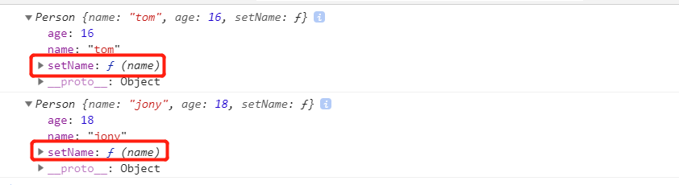

1、Object构造函数
var obj = new Object();
obj.name = 'tom';
obj.age = 15;
obj.sayName = function() {
console.log(this.name)
}
此方法的缺点十分明显那就是要写大量的代码。
2、对象字面量创建
var obj1 = {
name: 'tom',
age: 15,
sayName: function() {
console.log(this.name)
}
}
var obj2 = {
name: 'jock',
age: 18,
sayName: function() {
console.log(this.name)
}
}
字面量的缺点是当我i们创建多个相似的对象的时候，它仍然不够灵活，依然会产生重复代码。
3、工厂模式
function person(name, age) {
var obj = {
name: name,
age: age,
sayName: function() {
console.log(this.name)
}
}
return obj
}
工厂函数的问题在于它所创建的对象没有具体的类型，所有通过工厂函数所创建的对象的类型都是Object
4、构造函数方式
function Person(name, age) {
this.name = name;
this.age = age;
this.setName = function(name) {
this.name = name
}
}
var p1 = new Person('tom', 16);
var p2 = new Person('jony', 18);
console.log(p1)
console.log(p2)
通过构造函数方法创建对象代码足够简洁，所创建的对象也有自己的类，但是当我们同时创建多个对象的时候会发现，所创建的对象都包含相同的方法，这是一种浪费内存的表现。
5、构造函数加原型
function Person(name, age) {
this.name = name;
this.age = age;
}
Person.prototype.setName = function(name) {
this.name = name
}我们把构造函数的方法扩展到它的原型上，这样就不存在创建对象的时候同时创建多个方法了。
以上是我所了解的常用的创建对象的方式，谨以此文记录。如有错误敬请指出!